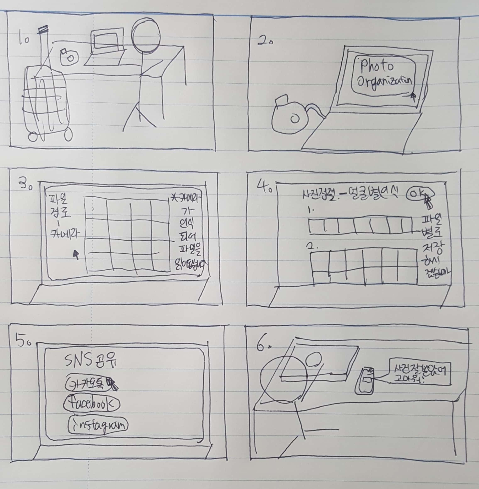
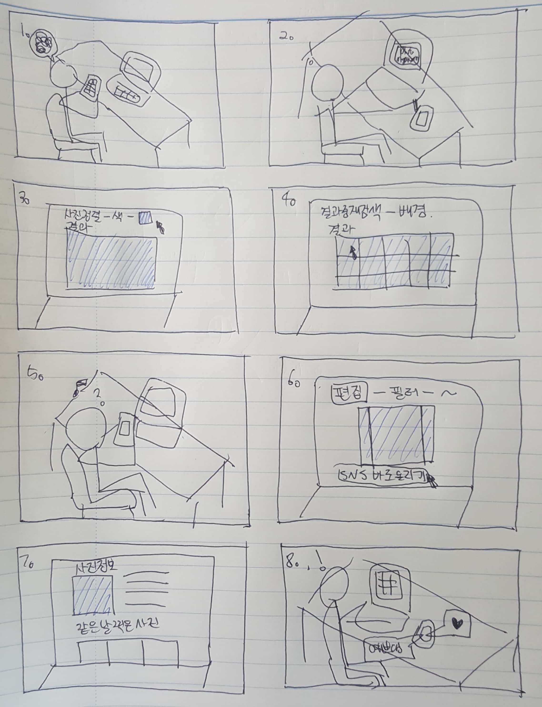

Photo Organization: Requirements and User Analysis
1. Requirements
Overall objective of the application
프로젝트로 진행할 주제는 사진 정리 어플리케이션입니다.
사용자가 원하는 방법의 사진 정리 방 식을 제공해줘야 할 의무가 있으며, 그 기준에는 날짜, 시간, 위치, 사진의 주요 색깔, 더 나아가 AI를 이용한 사진에 등장하는 인물, 배경을 파악하여 같은 것들이 있는 사진끼리 묶어 주는 등의 역할을 하게 될 것입니다.
이렇게 사용자가 지정한 방법으로 사진 정리가 완료되면, 어플리케이션 의 하드웨어 플랫폼이 될 노트북의 파일에 정리된 방식으로 재저장이 가능하게 하는 것이 전체적 인 어플리케이션의 목적입니다.
Major functional requirements
Functional requirements, 즉, 유저와의 interaction을 통해 바로 실행되어야 할 주요 기능 들에는 어떤 기준으로 사진 정렬을 할 것인지, 사진 저장 형태를 어떻게 할 것인지, 유저가 정하면 그에 따라 사진을 정렬, 확장자 변형을 해주어야 할 것입니다.
또한 제가 사전조사에서 조사하였었던 사진 정리 어플리케이션을 바탕으로, 약간의 사진 편집기능도 포함 되어야할 것입니다. 저의 타겟 유저층은 20대 초반 대학생들은 사진을 주로 SNS에 활용되므로, ‘instagram’에 맞는 사진 규격을 제공해 주는 것도 좋을 것입니다.
Major UI requirements
Functional UI requirements에는 대표적으로 사진 형식의 파일을 자동으로 읽어 와서 화면에 띄우 기, 사진 정보 불러오기가 있습니다.
Non-functional UI requirements에는 대표적으로 어플리케이션 의 전체적인 인상과 분위기를 결정해줄 아이콘과 대표 색상, 사진 이름 등에 쓰일 글씨체가 있습
니다. 뒤에서 언급하겠지만 타겟 유저층이 20대 초반의 대학생들이므로 디자인에 민감한 세대이 므로 실질적인 기능을 담당하고 있는 부분은 아니지만
어플리케이션을 사용할지 말지를 첫인상에 정하게 되는 가장 중요한 부분이라 할 수 있습니다.
Other considerations
타겟 유저층은 20대 초반의 대학생들로 정하였습니다. 요즘에는 해외로 여행을 자주 다니며 핸드 폰 이외에도 DSLR등으로 사진을 찍는 것을 취미로 가지는 학생들이 많습니다.
핸드폰으로 찍은 사진은 날짜별로 정리하기도 쉽고 접근성이 뛰어나지만, 카메라로 찍은 사진들은 그렇지 못합니 다. 따라서 저는 큰 용량 처리도 쉽고, 대부분의 대학생들이 소지하고 있는 노트북을
어플리케이 션의 하드웨어 플랫폼으로 삼고자 합니다. 노트북은, 모니터, 키보드, 그리고 사용자에 따라 마우 스 혹은 터치패드, 스피커로 구성되어 있으며 멀티테스킹이 가능하다는 장점이 있습니다.
사진을 정리하는 건 생각과 시간을 요구하는 것이므로 현재 만들고자 하는 어플리케이션에 적합한 하드 웨어 플랫폼이라 생각됩니다.
2. User analysis
Interviews
동대학에 재학 중인 22살 대학생 두 명을 대상으로 사진 정리 어플리케이션에 대한 인터뷰를 진 행하였습니다.
인터뷰에 대한 결과를 서술하기에 앞서, interviewee들은 두 명 모두 핸드폰 이외의 카메라를 소유하고 있으며 SNS도 이용, 사진을 자주 찍는 사람들에 해당됩니다.
또한, 동영상에는 나와있지 않지만, 현재 만들고자 하는 사진 정리 어플리케이션에 대한 설명이 인터뷰 전에 이루 어졌으며
질문 사항은 그에 대한 인터페이스가 어떻게 구축되었으면 좋겠는지, 지금 떠올리는 원 하는 기능이 무엇인지에 대한 질문에 대한 대답이 동영상에 들어있습니다.
Major direct user requirements
우선적으로 요구된 것은 기본적이 기능들이었습니다. 사이즈, 확장명, 날짜시간 순으로 정렬되는 기능이 필요하다 했고, 기본적인 사진의 편집(회전, 압축)에 대한 요구도 있었습니다. 구글 포토와 비슷하게 AI를 통해 인물, 사물 별로 구별하는 기능, 추가적인 요소로 sns공유기능 등의 유저의 요구가 있었습니다.
Major cognitive/ergonomic requirements
직관, 심플한 인터페이스의 디자인을 선호한다는 것을 확인할 수 있었습니다. 사진 분류기능, 편 집 기능 등 기능에 따라 분류, 배너의 위치를 자유자재로 바꿀 수 있게 하기, 오른손잡이 왼손잡 이에 따라 설정을 바꿀 수 있는 기능 등이 요구되었습니다.
Usage scenarios
- Scenario 1 -

설명
1. 여행에 다녀온 직후 친구들에게 찍은 사진을 보내주어야한다.
2. 노트북에 메모리칩을 연결시키고 사진을 인식하기 기다리는 동안 어플리케이션을 실행시켰다.
3. 어플리케이션이 연결되어있는 메모리칩을 인식하고 그 파일을 불러온다.
4. 사용자는 사람 얼굴에 따라 사진을 나눠서 따로 파일을 생성하여 노트북에 저장한다.
5. sns공유 기능을 통해 친구들에게 각각 사진을 보내준다.
6. 종료
-Scenario 2 -

설명
1. SNS에 올릴 사진을 고르고자 어플리케이션을 실행시켰다.
2. 핸드폰과 연결하여 파일을 불러온다.
3. SNS 피드에 어울리는 사진을 찾기 위해 색감을 원하는 것을 설정해서 찾는다.
4. 그 중 원하는 배경을 찾는다.
5. 올릴 사진은 골랐지만 이 배경으로 사진을 찍은 날에 무엇을 했는지 궁금해졌다.
6. 고른 사진을 인스타그램에 맞는 규격으로 자르고 필터를 입혀서 올린다.
7. 그 사진 정보를 이용하여 그 사진이 찍힌 날짜의 사진들을 확인한다.
8. 종료
Rough interaction model for 2-3 major tasks
앞에서 서술한 시나리오들에 따른 rough interaction model을 작성해보았습니다.
1. 노트북 켜기 – 어플리케이션 실행(더블 클릭) – 카메라 자동인식 통한 파일 나열(자동) – 파일 확인 및 정렬할 파일 선택(파일이 여러 개일 경우) (클릭) - 정렬 메뉴에서 분류기준-사람 얼굴 선 택(마우스 포인터 이동 및 클릭) – 결과 확인 및 사람 별로 노트북에 파일 저장하기(클릭) – 공유 메뉴에서 메신저로 각각 파일 전송 - 종료
2. 노트북 켜기 – 어플리케이션 실행 – 파일 선택 – 정렬 메뉴에서 분류기준-색깔 선택 – 결과 중 재검색으로 배경모양 선택 – 마음에 드는 사진 고르기 – 편집 칸에서 SNS에 올릴 사진 규격 및 필터 편집 – SNS 바로 올리기 – 방금 선택한 사진 정보 학인하기(클릭) – 같은 날 찍은 사진 확인(클릭) – 종료